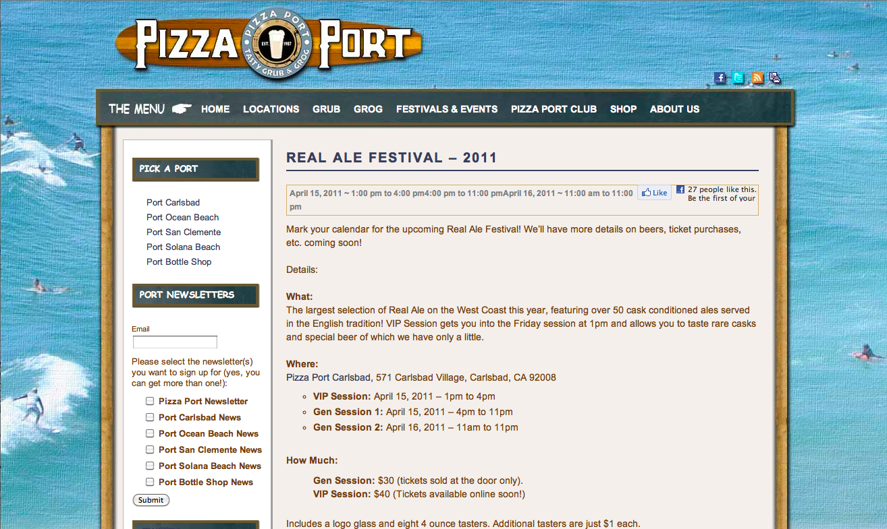
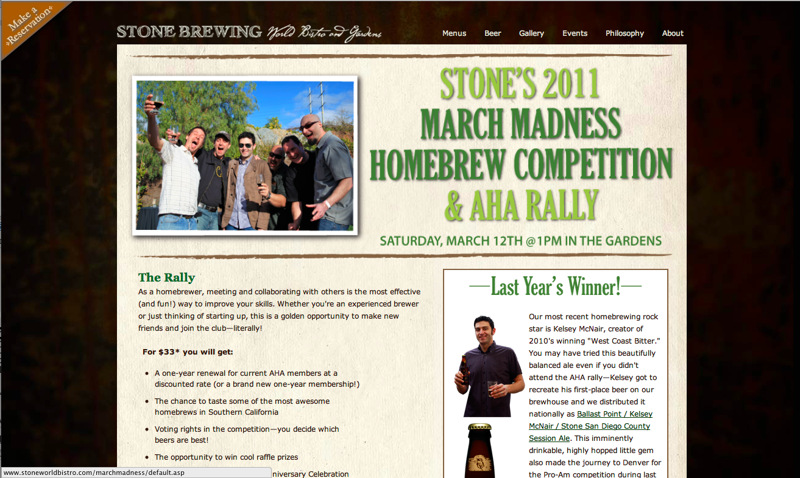
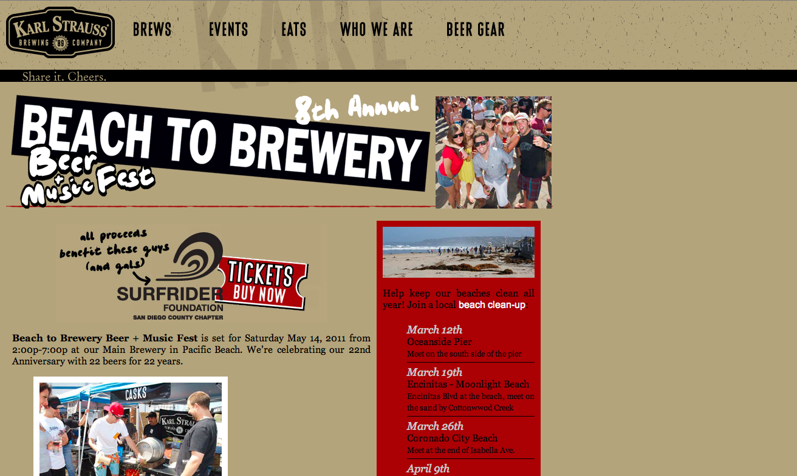

Content Inventory | Wireframes 1 - 2 - 3 | Copyright 2011 Paul Nguyen, Tony Nguyen, Paul Zaino
March Events

Pizza Port Real Ale Festival
The largest selection of Real Ale on the West Coast this year, featuring over 50 cask conditioned ales
served in the English tradition! VIP Session gets you into the Friday session at 1pm and allows you
to taste rare casks and special beer of which we have only a little. Clcik the link for more info!

Stone's 2011 March Madness Homebrew Competition
This is a fantastic article provided by beeradvocate.com that should help people understand how to respect beer
and appreciate it as a well crafted beverage rather than just using is as a way to get drunk. The article also covers
ways of making sure that you are enjoying your microbrew hobby responsibly. Click the link for more info!

Karl Strauss: Beach to Brewery Beer & Music Fest
This marks the 8th year of supporting our local Chapter of the San Diego Surfrider Foundation and we are looking forward to another
sellout event at the main brewery in Pacific Beach. Clcik the link for more info!